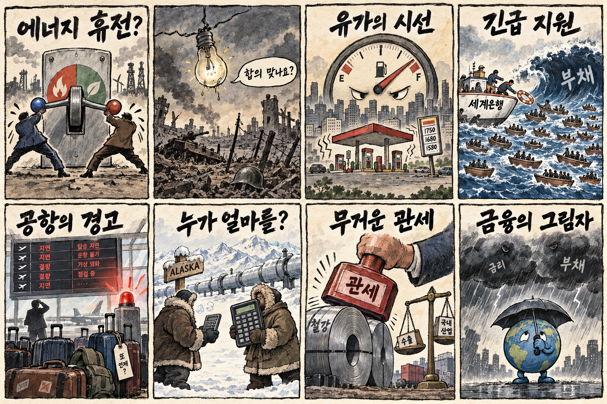
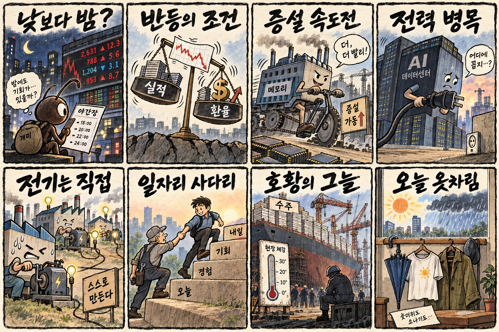

01
팔란티어 · 201.48→209.05달러 · +3.76%
내용요약 시가 대비 +3.97%로 조사 종목 중 가장 강한 반등을 보였습니다.
예상여파 소프트웨어 위험선호 회복에는 우호적이나 높은 변동성과 밸류에이션 부담을 함께 봐야 합니다.
MORNING_BRIEFING_20261012
작성 시각: 2026-10-12 06:36 KST · 직전 미국 정규장과 2026-10-12 KST 당일 공개 기사 기준
직전 미국 정규장인 10월 9일 뉴욕증시는 다우 +0.83%, S&P 500 +0.59%, 나스닥 +0.64%로 반등했습니다. 실적 시즌 기대가 위험선호를 지지했지만 인공지능 반도체는 상대적으로 약했습니다. 월요일 한국 증시는 긴 연휴 뒤 재개장하므로 누적된 기술주 흐름, 에너지 휴전 발언의 진위, 중동 공항 공격에 따른 유가·환율 변동을 시가 전에 함께 확인해야 합니다.
| 지수 | 종가 | 등락률 | 한국 증시 시사점 |
|---|---|---|---|
| 다우존스 | 51,654.95 | +0.83% | 실적 기대의 위험선호 회복은 다음 개장일 심리에 긍정적 |
| S&P 500 | 7,811.54 | +0.59% | 실적 기대의 위험선호 회복은 다음 개장일 심리에 긍정적 |
| 나스닥 종합 | 27,366.17 | +0.64% | 기술주 반등은 국내 성장주 심리에 우호적이나 AI 반도체 약세는 선별 부담 |
다우 +0.83%, S&P 500 +0.59%, 나스닥 +0.64%로 마감했습니다.
직접 발전 검토와 광케이블 주문이 인프라 확장의 핵심 변수로 떠올랐습니다.
누적 뉴스의 시가 갭 위험 때문에 장전 공식 추천 없이 현금 관망합니다.
에너지 휴전 발표와 우크라이나 측 인식이 엇갈려 유가 변동성을 봐야 합니다.
10월 11일 보고서는 일요일 국내 증시 휴장으로 공식 추천을 내지 않았습니다. 게시 당시 판단을 유지하며 사후 종목을 추가하지 않습니다.
| 시장 | 종가 | 등락률 | 기준 |
|---|---|---|---|
| KOSPI | 6,625.93 | -2.62% | 최근 거래일 10월 8일 · 시가 대비 -2.68% |
| KOSDAQ | 892.27 | -0.69% | 최근 거래일 10월 8일 · 시가 대비 -0.66% |
| 다우존스 | 51,654.95 | +0.83% | 미국 10월 9일 정규장 |
| S&P 500 | 7,811.54 | +0.59% | 미국 10월 9일 정규장 |
| 나스닥 종합 | 27,366.17 | +0.64% | 미국 10월 9일 정규장 |
팔란티어는 시가 대비 +3.97%, 오라클은 +3.44%로 반등했습니다.
크라우드스트라이크 +2.63%, 아마존 +2.39%로 기술주 반등을 이끌었습니다.
슈퍼마이크로 -3.49%, 인텔 -3.40%, AMD -2.79%로 약했습니다.
마이크론 -2.23%, 어플라이드머티리얼즈 -2.19%, 엔비디아 -1.96%였습니다.
내용요약 시가 대비 +3.97%로 조사 종목 중 가장 강한 반등을 보였습니다.
예상여파 소프트웨어 위험선호 회복에는 우호적이나 높은 변동성과 밸류에이션 부담을 함께 봐야 합니다.
내용요약 시가 대비 +3.44%로 전날 급락 뒤 반등했습니다.
예상여파 인공지능 투자 수익성 우려가 완화되는 신호지만 하루 반등만으로 추세 전환을 단정하기 어렵습니다.
내용요약 시가 대비 -3.49%로 서버·인공지능 하드웨어 약세가 이어졌습니다.
예상여파 국내 서버 부품주 투자심리에 부담이 될 수 있어 수주와 마진 확인이 중요합니다.
내용요약 시가 대비 -3.40%로 조사한 반도체 종목 중 큰 폭으로 하락했습니다.
예상여파 미국 반도체 반등이 업종 전반으로 확산되지 않았음을 보여줘 국내 종목별 선별이 필요합니다.
내용요약 시가 대비 -2.79%로 인공지능 반도체 약세 흐름을 보였습니다.
예상여파 국내 HBM·패키징 기대에도 단기 심리 부담이 될 수 있으며 실제 고객 주문과 제품 경쟁력을 봐야 합니다.
미국 3대 지수 반등은 재개장 위험선호에 우호적이지만 인공지능 반도체의 상대 약세와 국내 개인자금의 해외 이동은 추격 매수를 경계하게 합니다. 긴 연휴 동안 쌓인 뉴스가 한꺼번에 시가에 반영될 수 있어 외국인 선물, 원·달러 환율, 반도체 대형주의 갭을 먼저 확인해야 합니다.
오늘은 추천 없음 — 현금 관망
연휴 뒤 재개장 전으로 실제 당일 시가와 호가 유동성, 외국인·기관 초기 수급을 아직 검증할 수 없습니다. 종합점수 75점·상승확률 60%·예상 손익비 1.5를 동시에 검증할 수 없어 공식 후보를 제시하지 않습니다.
관심 연결종목 데이터센터 전력·광통신, 메모리 증설 관련주는 관찰 대상일 뿐 매수 추천이 아닙니다. 누적 뉴스로 예상 갭이 커질 수 있으므로 추격매수하지 않습니다.
시가 갭과 외국인 선물, 원·달러 환율을 먼저 확인합니다.
지수 반등이 기업 실적과 전망으로 이어지는지 봅니다.
직접 발전 검토와 광케이블 주문이 실제 투자로 이어지는지 봅니다.
발언의 이행 여부와 공항 공격이 유가·물류에 미치는 영향을 점검합니다.
핵심 요약: 인공지능 경쟁의 병목이 반도체에서 전력과 광통신망으로 넓어졌습니다. 휴머노이드 메모리 수요와 산업 현장 인공지능 투자가 이어지는 한편 금융권 보안 대응의 실효성도 중요한 과제로 떠올랐습니다.
내용요약 인공지능 데이터센터의 데이터 전송 병목을 낮출 광케이블에 미국 주문이 늘고 있다는 당일 보도입니다.
예상여파 칩·전력에 이어 광통신망이 핵심 인프라로 부상할 수 있으나 실제 수주잔고와 마진을 확인해야 합니다.
내용요약 삼성·현대차·포스코가 인공지능발 전력 병목에 대응해 원전 등 직접 발전 방안을 검토한다는 당일 보도입니다.
예상여파 전력 확보가 대규모 인공지능 투자 일정과 제조원가를 좌우하며 민간 발전·전력망 논의가 빨라질 수 있습니다.
내용요약 휴머노이드용 디램 수요가 4년 뒤 20배로 늘 수 있다는 업계 전망을 다룬 당일 보도입니다.
예상여파 로봇 확산이 메모리 수요처를 넓힐 수 있지만 전망치의 전제와 실제 양산 속도를 함께 봐야 합니다.
내용요약 포스코DX가 숙련자의 판단을 학습하는 산업 인공지능 스타트업에 투자했다는 당일 보도입니다.
예상여파 현장 지식의 소프트웨어화가 생산성 개선으로 연결되는지 상용화와 반복 수주가 관건입니다.
내용요약 인공지능 기반 해킹 위험이 커지는 가운데 은행권 보안 예산 비중이 낮다는 당일 보도입니다.
예상여파 금융권의 탐지·대응 투자가 확대될 가능성이 있으나 예산보다 실제 사고 감소와 복구 역량이 중요합니다.
핵심 요약: 러시아·우크라이나 에너지 휴전 발표와 당사자 반응이 엇갈렸습니다. 세계은행의 긴급지원 논의에도 사우디 공항 공격과 에너지 조달 협상은 유가·물류·부채 위험이 계속되고 있음을 보여줍니다.
내용요약 미국 대통령이 러시아와 우크라이나가 에너지 시설 공격 중단에 합의했다고 밝혔다는 당일 보도입니다.
예상여파 우크라이나 측 인식과 이행 여부가 엇갈려 유가·위험자산의 즉각적 낙관은 경계해야 합니다.
내용요약 세계은행이 고유가와 부채위기에 대응해 40개국과 최대 1000억달러 규모 긴급지원을 협의한다는 당일 보도입니다.
예상여파 취약국 유동성 완화에 도움이 될 수 있지만 지원 조건과 집행 속도가 시장 안정의 핵심입니다.
내용요약 사우디 담맘 공항도 공격을 받았고 리야드 공항 사망자가 늘었다는 당일 보도입니다.
예상여파 중동 항공·물류와 에너지 시설의 위험 프리미엄이 높아져 운항 차질과 유가 변동성이 이어질 수 있습니다.
내용요약 알래스카 액화천연가스 사업을 두고 한국과 일본에 제시된 부담 방식이 달랐다는 당일 보도입니다.
예상여파 대규모 에너지 조달 협상의 비용·물량 조건이 국내 무역과 공기업 재무에 영향을 줄 수 있습니다.
내용요약 우크라이나 대통령이 러시아가 60일 휴전에 동의하면 선거를 실시하겠다고 밝혔다는 당일 보도입니다.
예상여파 휴전과 정치 일정이 연동되며 협상 여지는 생겼지만 전장 검증과 국내 합의가 선행돼야 합니다.

핵심 요약: 연휴 뒤 증시는 실적과 환율을 확인하며 반등을 시도하지만 개인자금의 해외 이동이 수급 부담입니다. 인공지능 메모리 증설과 직접 발전 검토가 빨라지는 가운데 일자리 제도와 늦더위 소나기도 오늘의 생활 변수입니다.
내용요약 개인투자자의 국내 주식 이탈과 미국 주식 거래 확대를 다룬 당일 보도입니다.
예상여파 국내 시장의 개인 수급 공백과 야간 거래 선호가 원화 수요와 증권사 수익 구조에도 영향을 줄 수 있습니다.
내용요약 인공지능 메모리 호황을 배경으로 반도체 증설 속도가 빨라지고 있다는 당일 보도입니다.
예상여파 장비·소재 발주 확대 가능성이 있지만 공급과잉과 투자 회수 기간을 함께 점검해야 합니다.
내용요약 대기업들이 인공지능 전력 병목에 대응해 직접 발전을 검토한다는 당일 보도입니다.
예상여파 전력 확보가 신규 데이터센터와 제조 투자의 입지·일정을 가르는 핵심 변수가 될 수 있습니다.
내용요약 청년과 고령층 일자리를 함께 늘리기 위해 일본식 단계적 재고용을 참고하자는 제언을 다룬 당일 보도입니다.
예상여파 정년·임금체계와 청년 채용을 함께 설계해야 세대 간 일자리 충돌을 줄일 수 있습니다.
내용요약 서울 낮 26도 등 늦더위 속 내륙 소나기가 예보됐다는 당일 기사입니다.
예상여파 큰 일교차와 돌발 강수로 출퇴근·야외 일정에 불편이 예상돼 우산과 건강 관리가 필요합니다.
